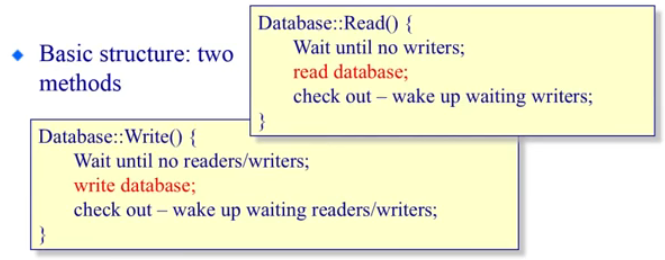
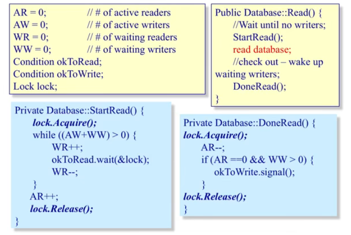
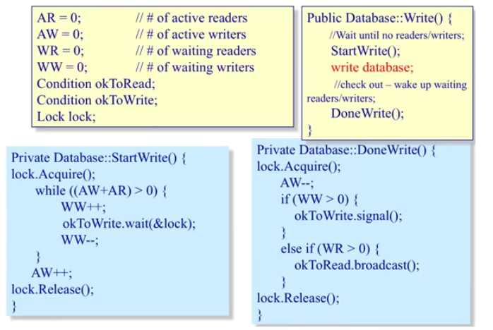

本文介绍经典同步问题，包括读者 - 写者问题（涉及读者优先、写者优先的信号量方式实现与管程方式实现），以及哲学家就餐问题。
读者 - 写者问题 读者 - 写者问题的 动机：对共享数据的访问 ，即读者想要读取共享空间中的数据，而写者想要往共享空间中写入数据，这就需要合理安排读者和写者的访问时机，否则就会出现数据错误问题。
这其中有两种不同角色的使用者：
读者：不修改数据、仅仅读取数据；
写者：读取数据并写入（修改）数据。
问题的约束（对共享数据访问的前提条件）：
允许同一时刻有多个读者，但在任意时刻最多只有一个写者；
当没有写者时，读者才能访问数据；
当没有读者和写者时，写者才能访问数据；
在任何时候只有一个线程可以操作共享变量。
涉及的共享数据、变量有哪些？
共享数据集；
读者计数器 ReaderCount（初始化为 0）；
写者访问控制信号量 WriteMutex（初始化为 1）——在任意时刻最多只有一个写者，故初始化值必须为 1。
读者计数器访问控制信号量 CountMutex（初始化为 1）——这里初始化为 1，可以实现多个读者同时读取共享数据集，原因是 WriteMutex 和 CountMutex 一个数对共享数据执行写入的互斥访问，另一个是对读者计数器的互斥访问，而不是对读取共享数据集的互斥访问 ，所以可以实现多个读者同时读取共享数据集。（具体看后续代码实现）
信号量方式实现读者优先 何为读者优先 何为读者优先？
只要有一个读者处于活跃状态（正在读取共享数据），后来的读者都会被接纳（允许其读取数据），即使这些读者是在正在等待的写者之后到来的，也会优先让这些读者读取数据。如果读者源源不断的出现，那么写者始终处于阻塞状态。
共享变量定义 定义并初始化上述共享变量：
1 2 3 4 5 6 7 8 9 #include <semaphore.h> int ReaderCount = 0 ; sem_t WriteMutex; sem_t CountMutex; sem_init(&WriteMutex, 0 , 1 ); sem_init(&CountMutex, 0 , 1 );
写者线程处理 Writer 写者线程处理：
1 2 3 4 5 void * writer (void * arg) { sem_wait(&WriteMutex); write(); sem_post(&WriteMutex); }
分析：
在写者线程中，当 WriteMutex 信号量为 1 时，执行 P 操作后 WriteMutex >=0，不会触发等待；
若此时再来一个写者，执行 P 操作后，WriteMutex < 0，会进行等待。直到持有信号量的写者，执行 V 操作后，唤醒一个等待的写者线程。
读者线程处理 Reader 读者线程处理：
1 2 3 4 5 6 7 8 9 10 11 12 13 14 15 16 17 void * reader (void * arg) { sem_wait(&CountMutex); if (ReaderCount == 0 ) { sem_wait(&WriteMutex); } ReaderCount++; sem_post(&CountMutex); read(); sem_wait(&CountMutex); ReaderCount--; if (ReaderCount == 0 ) { sem_post(&WriteMutex); } sem_post(&CountMutex); }
分析：
在读者线程中，首先通过 sem_wait(&CountMutex) 等待，获取读者计数器访问控制信号量，如果 ReaderCount 的值为 0，意味着第一个读者进入 ，需要通过 sem_wait(&WriteMutex) 获取写者访问控制信号量（这样，如果后续来了写者线程，就会进入等待），避免写者同时存在。
接下来，释放读者计数器访问控制信号量 sem_post(&CountMutex)（以使得后续读者能够进入），进行读操作。
最后，再次获取读者计数器访问控制信号量，减少读者计数器 ReaderCount，如果 ReaderCount 的值为 0，意味着没有读者了 ，需要通过 sem_post(&WriteMutex) 释放写者访问控制信号量。
为什么一个读者线程中，涉及了两对关于 CountMutex 的 sem_wait 等待和 sem_post 释放呢？
这是因为，读者计数器 ReaderCount 是一个共享变量，在一个读者进入或退出时，需要修改 ReaderCount 的值，这要保证对该变量的互斥访问，防止数据错误。
管程方式实现写者优先 何为写者优先 何为写者优先？
只要有一个写者处于活跃状态，后来的写者都会被接纳，即使这些写者是在正在等待的读者之后到来的，也会优先让这些写者写入数据。如果写者源源不断的出现，那么读者始终处于阻塞状态。
伪代码 读者写者问题的写者优先可以抽象为两个方法：
读者线程：等待没有写者 -> 读取数据集 -> 检查：唤醒等待的写者；
写者线程：等待没有读者、写者 -> 往数据集写入数据 -> 检查：唤醒等待的读者或写者。

管程方式实现 共享变量定义 1 2 3 4 5 6 7 8 int AR = 0 ; int AW = 0 ; int WR = 0 ; int WW = 0 ; Condition okToRead; Condition okToWrite; Lock lock;
读者线程实现 
1 2 3 4 5 6 7 8 9 10 11 12 13 14 15 16 17 18 19 20 21 22 23 24 25 26 27 28 29 30 31 Public Database::Read () { StartRead (); read database; DoneRead (); } Private Database::StartRead () { lock.Acquire (); while (AW + WW > 0 ) { WR++; okToRead.wait (&lock); WR-- } AR++; lock.Release (); } Private Database::DoneRead () { lock.Acquire (); AR--; if (AR == 0 && WW > 0 ) { okToWrite.signal (); } lock.Release (); }
体现写者优先的细节 1：只要有写者，别管是活跃的、还是等待的，写者就得等待。
在 DoneRead() 中，为什么有活跃的读者时，不能唤醒写者？不是写者优先吗？
因为，有活跃的读者，表明读者正在读取数据，这时若唤醒写者写入（修改数据），会出现数据错误。虽然是写者优先，但优先的前提是写者 正在占据 database，这时后来的读者、写者，才会优先写者。
写者线程实现 
1 2 3 4 5 6 7 8 9 10 11 12 13 14 15 16 17 18 19 20 21 22 23 24 25 26 27 28 29 30 31 32 33 34 Public Database::Read () { StartWrite (); write database; DoneWrite (); } Private Database::StartWrite () { lock.Acquire (); while (AW + AR > 0 ) { WW++; okToWrite.wait (&lock); WW-- } AW++; lock.Release (); } Private Database::DoneWrite () { lock.Acquire (); AW--; if (WW > 0 ) { okToWrite.signal (); } else if (WR > 0 ){ okToRead.broadcast (); } lock.Release (); }
体现写者优先的细节 2：有活跃的写者（和活跃的读者）时，新的写者需要等待。
体现写者优先的细节 3：优先检查并唤醒等待的写者，而不是等待的读者。
哲学家就餐问题 问题描述 问题的设定是：
有一圆桌上放着 N 个餐盘和 N 个叉子，N 个哲学家坐在 圆桌 旁边的椅子上，每个哲学家需要同时拿起他左、右两边的叉子才能进餐，吃完后放下叉子继续思考。如果一个哲学家拿起了左边的叉子，但右边的叉子被其他哲学家占用，那么他就必须等待其他哲学家放下叉子后才能继续。
哲学家就餐问题是一个经典的并发问题，用来探讨在共享资源的情况下，多个进程或线程之间如何协调和竞争资源的使用。
关键挑战 哲学家就餐问题的挑战在于如何 避免死锁 （当所有哲学家都拿起了左边的叉子，但无法再拿起右边的叉子时）和 饥饿 （某个哲学家无法获得两个叉子而一直等待）的情况发生。
问题思考 共享资源：N 个餐盘和 N 个叉子。
涉及的动作：思考、拿起某一个叉子、进餐、放下某一个叉子。
成功进餐：只要相邻的叉子，被同一个哲学家拿去，那么这个哲学家就可以成功进餐。
失败进餐：当所有哲学家都拿起了左边的叉子，导致无法拿起右边的叉子。
哲学家饿死：N-1 个哲学家进餐很多、很多次后，才能轮到那一个哲学家进餐，虽然有机会进餐，但是大概率在拿到这个机会前就被饿死了。
各种实现思考 直观实现（错误） 1 2 3 4 5 6 7 8 9 10 11 12 #define N (5) void philosopher (int i) { while (true ) { think(); take_fork(i); take_fork((i + 1 ) % N); eat(); put_fork(i); put_fork((i + 1 ) % N); } }
结果：不正确，可能导致死锁。对于 1 个哲学家没问题，但如果 5 个哲学家同时拿起了左边的叉子，大家都准备拿取右边的叉子，拿不到，出现死锁。
稍作改进实现（错误） 1 2 3 4 5 6 7 8 9 10 11 12 13 14 15 16 17 18 void philosopher (int i) { while (true ) { think(); while (true ) { take_fork(i); if (fork((i + 1 ) % N)) { take_fork((i + 1 ) % N); break ; } else { put_fork(i); wait_some_time(); } } eat(); put_fork(i); put_fork((i + 1 ) % N); } }
结果：不正确，可能一直循环。大家同时拿起左边的叉子，又因为拿不到右边的叉子，又同时放下，如此循环。
等待随机时间实现（可行） 将 wait_some_time() 替换为 wait_random_time()。可行，但由于时间随机，存在很多不确定性（如多次长时间等待，可能会出现饿死情况），不够完美。
简单互斥访问实现（可行） 1 2 3 4 5 6 7 8 9 10 11 12 13 14 semaphore mutex = 1 ; void philosopher (int i) { while (true ) { think(); P(mutex); take_fork(i); take_fork((i + 1 ) % N); eat(); put_fork(i); put_fork((i + 1 ) % N); V(mutex); } }
结果：正确，但每次仅允许一个人进餐。虽然解决了死锁，但存在缺点：
它将就餐（而不是叉子）看成是必须互斥访问的临界资源，由此造成了叉子资源的浪费；
从理论上讲，最多应允许 N%2 个不相邻的哲学家同时进餐。
正确实现 思考 思路一：如果你是一个哲学家，你会怎么来解决这个问题？
指导原则：要么不拿，要么就拿两把叉子。
1 2 3 4 5 6 7 8 S1: 思考中... S2: 进入饥饿状态 S3: 如果左邻居或右邻居正在进餐，则等待，否则转向 S4 S4: 拿起两把叉子 S5: 进餐... S6: 放下左边的叉子 S7: 放下右边的叉子 S8: 新的循环又开始了，转向 S1
思路二：计算机怎么解决这个问题？
指导原则：不能浪费 CPU 时间、进程间相互通信。
1 2 3 4 5 6 7 8 S1: 思考中... S2: 进入饥饿状态 S3: 如果左邻居或右邻居正在进餐，进程进入阻塞状态，否则转向 S4 S4: 拿起两把叉子 S5: 进餐... S6: 放下左边的叉子，看看左邻居现在能否进餐（饥饿状态，两把叉子都在），若能则唤醒之 S7: 放下右边的叉子，看看右邻居现在能否进餐（饥饿状态，两把叉子都在），若能则唤醒之 S8: 新的循环又开始了，转向 S1
思路三：你应该怎么编写程序？
必须有数据结构：用于描述每个哲学家当前状态
该状态是一个临界资源，对它的访问应该是互斥地进行
一个哲学家吃饱后，可能要唤醒邻居，存在同步关系
这里我们将「哲学家」看做了互斥访问的资源，而不像上面错误的实现中是将「叉子」看做了互斥访问的资源。
实现（可运行） 1 2 3 4 5 6 7 8 9 10 11 12 13 14 15 16 17 18 19 20 21 22 23 24 25 26 27 28 29 30 31 32 33 34 35 36 37 38 39 40 41 42 43 44 45 46 47 48 49 50 51 52 53 54 55 56 57 58 59 60 61 62 63 64 65 66 67 68 69 70 71 72 73 74 75 76 77 78 79 80 81 82 83 84 85 86 87 88 89 90 91 92 93 94 95 96 97 98 99 #include <pthread.h> #include <semaphore.h> #include <stdbool.h> #include <stdint.h> #include <stdio.h> #include <stdlib.h> #include <time.h> #include <unistd.h> #define N (5) #define LEFT(i) (((i) + N - 1) % N) #define RIGHT(i) (((i) + 1) % N) typedef enum philo_state {0 , HUNGARY, EATING } philo_state_en;sem_t sem_mutex; int state[N]; sem_t sem_sync[N]; pthread_t thread[N]; void think (int i) { printf ("philo-%d, think start at %ld\r\n" , i, clock()); sleep(1 + rand() % 5 ); printf ("philo-%d, think end at %ld\r\n" , i, clock()); } void eat (int i) { printf ("philo-%d, eat start at %ld\r\n" , i, clock()); sleep(1 + rand() % 5 ); printf ("philo-%d, eat end at %ld\r\n" , i, clock()); } void test_take_lr_forks (int i) { if (state[i] == HUNGARY && state[LEFT(i)] != EATING && state[RIGHT(i)] != EATING) { state[i] = EATING; sem_post(&sem_sync[i]); } } void take_forks (int i) { sem_wait(&sem_mutex); state[i] = HUNGARY; test_take_lr_forks(i); sem_post(&sem_mutex); sem_wait(&sem_sync[i]); } void put_forks (int i) { sem_wait(&sem_mutex); state[i] = THINKING; test_take_lr_forks(LEFT(i)); test_take_lr_forks(RIGHT(i)); sem_post(&sem_mutex); } void philosopher (int i) { printf ("Thread #%lu, phiol-%d in place\r\n" , pthread_self(), i); while (true ) { think(i); take_forks(i); eat(i); put_forks(i); } } int main (int argc, char * argv[]) { sem_init(&sem_mutex, 0 , 1 ); for (int i = 0 ; i < N; i++) { state[i] = THINKING; sem_init(&sem_sync[i], 0 , 0 ); } for (int i = 0 ; i < N; i++) { pthread_create(&thread[i], NULL , (void * (*)(void *))philosopher, (void *)(uintptr_t )i); } for (int i = 0 ; i < N; i++) { pthread_join(thread[i], NULL ); } sem_destroy(&sem_mutex); for (int i = 0 ; i < N; i++) { sem_destroy(&sem_sync[i]); } return 0 ; }
结果分析 持续打印结果：
1 2 3 4 5 6 7 8 9 10 11 12 13 14 15 16 17 18 19 20 21 22 23 24 25 26 27 28 29 30 31 32 33 34 35 36 37 38 39 40 41 42 43 44 45 46 47 Thread #140511761397312, phiol-0 in place philo-0, think start at 1572 Thread #140511753004608, phiol-1 in place philo-1, think start at 1621 Thread #140511727826496, phiol-4 in place philo-4, think start at 1754 Thread #140511744611904, phiol-2 in place philo-2, think start at 1791 Thread #140511736219200, phiol-3 in place philo-3, think start at 2068 philo-2, think end at 2092 philo-2, eat start at 2111 philo-1, think end at 2131 philo-2, eat end at 2164 philo-2, think start at 2184 philo-1, eat start at 2194 philo-4, think end at 2219 philo-4, eat start at 2245 philo-0, think end at 2280 philo-3, think end at 2332 philo-2, think end at 2366 philo-1, eat end at 2423 philo-1, think start at 2472 philo-2, eat start at 2513 philo-1, think end at 2561 philo-4, eat end at 2602 philo-4, think start at 2626 philo-0, eat start at 2657 philo-2, eat end at 2699 philo-2, think start at 2719 philo-3, eat start at 2750 philo-0, eat end at 2795 philo-0, think start at 2841 philo-1, eat start at 2882 philo-1, eat end at 2942 philo-1, think start at 2977 philo-4, think end at 3003 philo-0, think end at 3038 philo-0, eat start at 3053 philo-1, think end at 3072 philo-3, eat end at 3100 philo-3, think start at 3114 philo-2, think end at 3140 philo-2, eat start at 3157 philo-0, eat end at 3184 philo-0, think start at 3222 philo-4, eat start at 3258
从上面的打印可以看出：每个哲学家都在思考、进餐，而且保证了同时最多只有 5%2 个哲学家在同时进餐，如下：
1 2 3 4 5 6 7 8 2: 2111-2164 // 2 进餐 1: 2194-2423 // 1 进餐 4: 2245-2602 // 4,1 同时进餐 2: 2513-2699 // 2,4 同时进餐 0: 2657-2795 // 0,2 同时进餐 3: 2750-3100 // 3,0 同时进餐 1: 2882-2942 // 1,3 同时进餐 0: 3053-3184 // 0,3 同时进餐（哲学家 3 吃的有点久啊~）
参考资料：https://blog.csdn.net/weixin_53407527/article/details/125207305